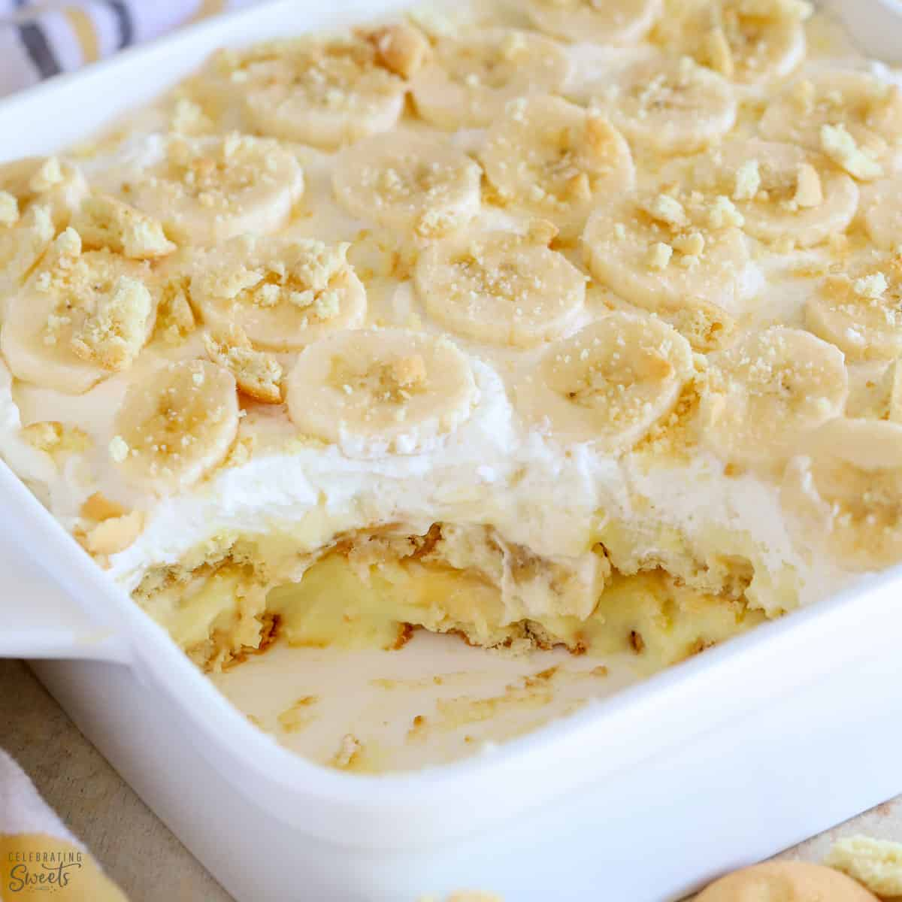

Ingredients
- 2/3 cup white sugar
- 1/3 cup all-purpose flour
- 1/4 teaspoon salt
- 3 large eggs, beaten
- 2 cups milk
- 2 tablespoons butter, softened
- ½ teaspoon vanilla extract
- 2 bananas, peeled and sliced
- 1/2 (12 ounce) package vanilla wafer cookies
Instructions
- Gather all ingredients.
- Combine sugar, flour, and salt together in a medium saucepan.
- Add eggs and stir well.
- Stir in milk, and cook over low heat, stirring constantly.
- When the mixture has thickened enough to coat the back of a metal spoon, remove from heat and continue to stir, cooling slightly.
- Stir in butter and vanilla until smooth.
- Layer pudding with bananas and vanilla wafers in a serving dish.
- Chill at least 1 hour in the refrigerator before serving.
- Enjoy!